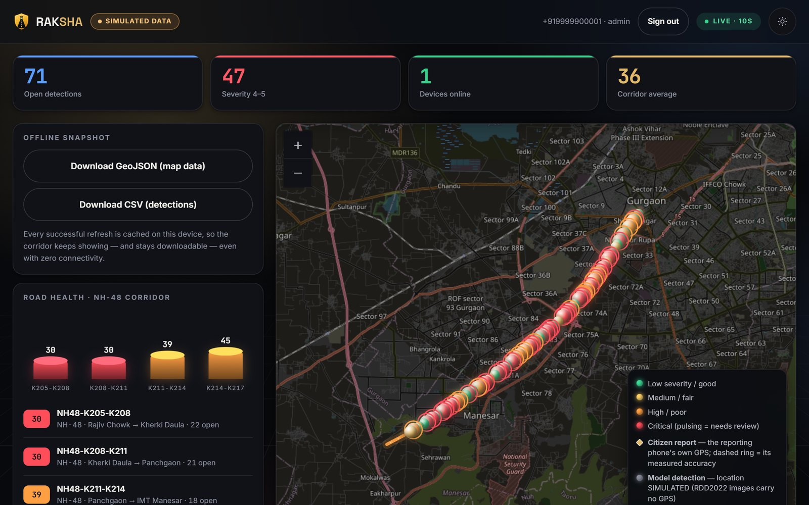
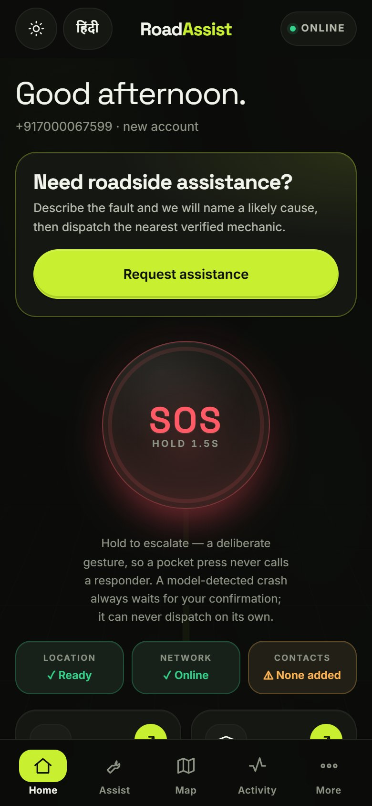
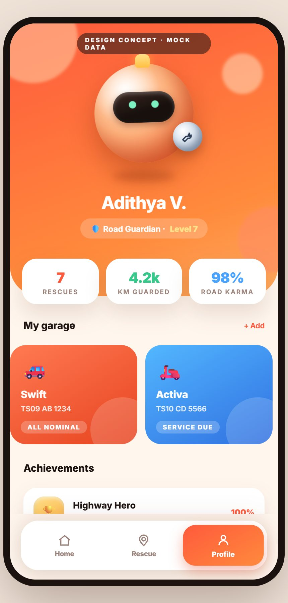

Every layer, live in 3D
The same stack as one model, running here. It turns on its own; open a layer, or press play to watch a real request travel through every one.

Roadside rescue in milliseconds, autonomous road-damage detection with a genuinely trained model, and a corridor that keeps reporting even when the network dies. All of it is running behind this page — the numbers below are live.
● LIVE — pulled from the running platform every 8 seconds · device data on this build is SIMULATED
Move your pointer over the stack. Each slab lights up as the event travels the real pipeline.
Every number on this page is measured, not asserted — the same pipeline passes 249/249 end-to-end assertions in CI.
The same stack as one model, running here. It turns on its own; open a layer, or press play to watch a real request travel through every one.
Real Indian road frames, boxed live by the trained model — nothing hand-drawn. Move your pointer to tilt.
Frames: RDD2022 India subset — Arya et al., CC BY-SA 4.0 · detection boxes are the model's own output
Two screens captured from the running system, and one design concept — each labelled for what it is. Tilt them.



The dashboard catching a live patrol, surviving a network cut, and the app booking a real rescue.